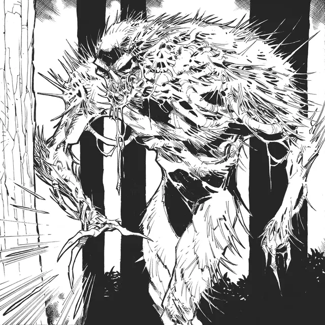

Игольчатое отродье
Needle Spawn
Среднее Растение, хаотично-злое

Класс Доспеха 13
Хиты 19 (3к10 + 3)
Скорость 30 футов, лазая 20 футов
| мод | спас | ||
|---|---|---|---|
| СИЛ | 11 | +0 | +0 |
| ЛОВ | 16 | +3 | +3 |
| ТЕЛ | 14 | +2 | +2 |
| мод | спас | ||
|---|---|---|---|
| ИНТ | 13 | +1 | +1 |
| МДР | 11 | +0 | +0 |
| ХАР | 10 | +0 | +0 |
Навыки Скрытность +5
Иммунитет к состояниям глухота, истощение, ослепление
Чувства слепое зрение 30 футов, пассивное Восприятие 11
Языки Сильван
Опасность 1/2 (100 опыта)
Бонус мастерства +2
Особенности
Ближняя стрельба. Пока отродье дееспособно, оно не получает помеху на дальнобойные атакам, пока в пределах 5 футов от него находится видимое им враждебное существо, если цель атаки так же находится в пределах 5 футов от него.
Действия
Залп игл. Отродье совершает 1к6 атак Иглами, но не может атаковать одно и то же существо больше двух раз за ход.
Клешня. . Рукопашная атака оружием: +5 к попаданию, досягаемость 5 фт., одна цель. Попадание: 6 (1к6 + 3) рубящего урона.
Игла. Дальнобойная атака оружием: +5 к попаданию, дистанция 60 футов, одна цель. Попадание: 5 (1к4 + 3) колющего урона.
Описание
Кто мы такие, чтобы предполагать, что то, что мы считаем обычным или нормальным, на самом деле является естественным пристанищем мультивселенной? Нужно понимать, что жизнь, какой мы ее знаем, - это всего лишь одна из эпох существования. Возможно, иглокожие - предвестники того, что однажды будет воспринято как правильный порядок существования. Если бы растения заменили все остальные живые существа, возможно, Равновесие стало бы еще сильнее.
Я же, разумеется, просто найду новую материальную форму, чтобы поддерживать свой дозор. Таково бремя дозорного - никогда не знать покоя или истинной передышки.
Мудрый следопыт знает, что вид игольчатого отродья - дурной знак, ибо он предвещает возвышение страшного Лорда игл и войну за душу леса.
Бродячие трупы. Игольчатые отродья создаются Лордами игл — неповоротливыми растительными существами, родом из Страны фей, охваченных бессмысленным насилием. Когда Лорд игл входит в мирской лес, он разбрасывает стручки семян повсюду, где бродит. Стручок остается бездействующим до тех пор, пока рядом с ним не умрет гуманоид или он не подтащат труп гуманоида, после чего стручок зарывается в разлагающуюся плоть трупа и прорастает в виде виноградных лоз, покрытыми длинными острыми иглами. Виноградные лозы обвиваются вокруг трупа, оживляя его, заставляя подниматься и шататься, как зомби.
Агрессивные виды. Когда в нескольких лесных массивах разворачивается великая битва, лесные растения иногда проявляют жажду насилия и завоеваний, которая толкает фей на войну. Эти растения становятся Лордами игл — скоплениями колючих лиан в форме людоедов, покрытых длинными, жестокими иглами, которые пронзают плоть. Лорд игл считает себя полководцем-завоевателем, блуждающим в поисках леса, который можно завоевать и заявить на него права. Когда он выбирает лес, он сначала сосредотачивается на распространении семенных стручков, из которых вырастают его вассалы-игольчатые отродья. Затем он бродит по лесу в поисках слабых или беззащитных гуманоидов, которых можно убить, превращая их трупы в игольчатые отродья, чтобы начать наращивать свою армию.
Неестественный союзник. Лорд игл - непримиримый враг, движимый только желанием завоевывать и править, он ведет бесконечную войну вместе со своей армией быстрых мертвецов против всех существ, которых он рассматривает как угрозу своему господству. Он может даже заключать договоры с хобгоблинами, кобольдами и другими существами и даже готов подчиняться им, но рассматривает любой союз, в котором он становится второстепенным партнером, лишь как временную меру. Лорд игл предает любых союзников при первой возможности, поскольку считает, что только одно существо может претендовать на господство над лесом.